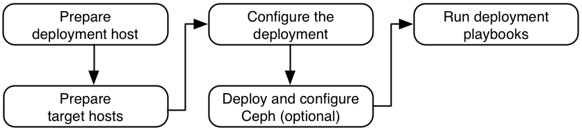

Overview#
Rackspace Private Cloud Powered By OpenStack (RPCO) uses a combination of Ansible and Linux Containers (LXC) to install and manage OpenStack Newton. This overview discusses the following topics:
- The technology used by RPCO
- The environment and network architecture
- Requirements to install RPCO
- The installation process workflow
Ansible#
RPCO is based on OpenStack-Ansible, which uses a combination of Ansible and Linux Containers (LXC) to install and manage OpenStack Newton. Ansible provides an automation platform to simplify system and application deployment. Ansible manages systems by using Secure Shell (SSH) instead of unique protocols that require remote daemons or agents.
Ansible uses playbooks written in the YAML language for orchestration. For more information, see Ansible - Intro to Playbooks.
In this guide, Rackspace refers to the host running Ansible playbooks as the deployment host and the hosts on which Ansible installs RPCO as the target hosts.
For more information about physical, logical, and virtual network interfaces within hosts, see Host networking.
Linux Containers (LXC)#
Containers provide operating-system level virtualization by enhancing the concept of chroot environments, which isolate resources and file systems for a particular group of processes without the overhead and complexity of virtual machines. Containers access the same kernel, devices, and file systems on the underlying host and provide a thin operational layer built around a set of rules.
The Linux Containers (LXC) project implements operating-system-level virtualization on Linux by using kernel namespaces and includes the following features:
- Resource isolation, including CPU, memory, block I/O, and network, by using cgroups
- Selective connectivity to physical and virtual network devices on the underlying physical host
- Support for a variety of backing stores, including Logical Volume Manager (LVM)
- Built on a foundation of stable Linux technologies with an active development and support community
For a list of useful Linux container commands, see Linux container commands.
Reference architecture#
The RPCO reference architecture enables the delivery of a stable and scalable production-ready private cloud powered by OpenStack. RPCO is designed and built by the experts who cofounded OpenStack and who run one of the world’s largest OpenStack-powered clouds. RPCO 14.0 is built on the Newton release of OpenStack. For more information, see the Rackspace Private Cloud Reference Architecture guide.
The RPCO reference architecture is a recommended set of software and infrastructure components designed to provide the scalability, stability, and high availability that you need to support enterprise production workloads.
RPCO 14.0 (r14-dev) is composed of OpenStack services, automation, and tooling. Services are grouped into logical layers, each providing key aspects of the overall solution. Following are the layers and their contents:
- Rackspace Fanatical Support ® and training
- Operations tooling layer:
- Ansible
- Capacity planning
- Cloud monitoring (MaaS)
- Presentation layer: Dashboard (horizon)
- Orchestration layer (heat):
- Heat-API
- Heat-API-CFN
- Heat-Engine
- Heat templates
- CloudFormation (CFN) template
- Infrastructure as a service layer:
- Block Storage (cinder)
- Compute (nova)
- Identity (keystone)
- Image service (glance)
- Networking (neutron)
- Object Storage (swift)
- Deployment automation layer:
- Ansible
- LXC
- OpenStack source
- Infrastructure database:
- MariaDB
- Galera
- Infrastructure message queue:
- RabbitMQ
- RabbitMQ clustering
Host layout#
The recommended layout for installing RPCO contains a minimum of five target hosts (or servers):
- Three control plane infrastructure hosts
- One logging infrastructure host
- One Compute host
All hosts require at least four 10 Gbps network interfaces. In Rackspace data centers, hosts can use an additional 1 Gbps network interface for service network access.
To use the optional Block Storage (cinder) service, a sixth host is required. Block Storage hosts require an LVM volume group named cinder-volumes. For more information, see Installation requirements and Configure LVM.
The hosts are called target hosts because Ansible deploys the RPCO environment within these hosts. The RPCO environment also requires a deployment host from which Ansible orchestrates the deployment process. One of the target hosts can function as the deployment host.
At least one hardware load balancer must be included to manage the traffic among the target hosts.
The infrastructure control plane target hosts contain the following services:
- Infrastructure:
- Maria DB with Galera
- RabbitMQ
- Memcached
- Logging agent
- OpenStack:
- Identity (keystone)
- Image service (glance)
- Compute management (nova)
- Networking (neutron)
- Orchestration (heat)
- Dashboard (horizon)
The infrastructure logging target host contains the following services:
- Rsyslog
- Logstash
- Elasticsearch with Kibana
The Compute target host contains the following services:
- Compute virtualization
- Networking agents
- Logging agents
The optional storage target host contains the following services:
- Block Storage volumes
- Logging agent
Host networking#
The combination of containers and flexible deployment options requires implementation of advanced Linux networking features such as bridges and namespaces.
Bridges provide layer 2 connectivity (similar to switches) among physical, logical, and virtual network interfaces within a host. After creating a bridge, the network interfaces are virtually “plugged in” to it.
RPCO uses bridges to connect physical and logical network interfaces on the host to virtual network interfaces within containers on the host.
Namespaces provide logically separate layer 3 environments (similar to routers) within a host. Namespaces use virtual interfaces to connect with other namespaces including the host namespace. These interfaces, often called virtual Ethernet (veth) pairs, are virtually “plugged in” between namespaces similar to patch cables connecting physical devices such as switches and routers.
Each container has a namespace that connects to the host namespace with one or more veth pairs. Unless specified, the system generates random names for veth pairs.
The following figure shows the relationship among physical interfaces, logical interfaces, bridges, and virtual interfaces.
Target hosts can contain the following network bridges:
- LXC internal
lxcbr0:- Mandatory (automatic).
- Provides external (typically internet) connectivity to containers.
- Automatically created and managed by LXC. Does not directly attach
to any physical or logical interfaces on the host because iptables
handle connectivity. Attaches to
eth0in each container.
- Container management
br-mgmt:- Mandatory.
- Provides management of and communication among infrastructure and OpenStack services.
- Manually created and attaches to a physical or logical interface,
typically a
bond0VLAN subinterface. Also attaches toeth1in each container.
- Storage
br-storage:- Optional.
- Provides segregated access to Block Storage devices between Compute and Block Storage hosts.
- Manually created and attaches to a physical or logical interface,
typically a
bond0VLAN subinterface. Also attaches toeth2in each associated container.
- Service
br-snet:- Optional.
- Provides segregated access to Cloud Files image stores from Image service hosts. Applies only to environments in Rackspace data centers.
- Manually created and uses a physical interface, but iptables
handles connectivity rather than direct attachment. Attaches to
eth3in each associated container.
- OpenStack (Project) Networking tunnel/overlay
br-vxlan:- Mandatory.
- Provides infrastructure for VXLAN tunnel/overlay networks.
- Manually created and attaches to a physical or logical interface,
typically a
bond1VLAN subinterface. Also attaches toeth10in each associated container.
- OpenStack (Project) Networking provider
br-vlan:- Mandatory.
- Provides infrastructure for VLAN and flat networks.
- Manually created and attaches to a physical or logical interface,
typically
bond1. Also attaches toeth11in each associated container. Does not contain an IP address because it handles only layer 2 connectivity.
The following figure provides a visual representation of network components for services in containers on the infrastructure hosts.
The RPCO architecture uses bare metal rather than a container for Compute hosts. The following figure provides a visual representation of the network architecture on a Compute host.
Since v11, the RPCO architecture uses bare metal rather than a container for Block Storage hosts. The Block Storage service lacks interaction with the OpenStack Networking service and therefore requires only one pair of network interfaces in a bond for the management and storage networks. However, implementing the same network interfaces on all hosts provides greater flexibility for future growth of the deployment. The following figure provides a visual representation of the network architecture on Block Storage hosts. For more information about how this change impacts upgrades from earlier releases, see the Upgrade Guide.
OpenStack Networking#
OpenStack Networking (neutron) is configured to use a DHCP agent, L3 Agent, and Linux Bridge agent within a networking agents container. The following figure shows the interaction of these agents and network components, and the connection to a physical network.
The Compute service uses the KVM hypervisor. The following figure shows the interaction of instances, Linux Bridge agent, and network components, and the connection to a physical network.
Installation requirements#
This section provides the installation requirements for the deployment and target hosts.
Deployment host#
The following items are required on the deployment host:
- Ubuntu 16.04 LTS (Xenial Xerus) or a compatible operating system that meets all other requirements
- Secure Shell (SSH) client supporting public key authentication
- Synchronized network time protocol (NTP) client
- Python 2.7 or later
Target hosts#
The following items are required on the target host:
- Ubuntu Server 16.04 LTS (Xenial Xerus) 64-bit operating system.
- SSH server supporting public key authentication
- Synchronized NTP client
The following items are optional on the deployment host:
For hosts providing Block Storage (cinder) service volumes, a Logical Volume Manager (LVM) volume group named cinder-volumes
An LVM volume group named lxc to store container file systems. If the LXC volume group does not exist, containers are automatically installed in the root file system of the host.
Note
By default, openstack-ansible creates a 5 GB logical volume for each container and 12 GB for each glance container. Plan storage accordingly to support the quantity of containers on each target host.
For Customer Data Center (CDC) deployments, where the customer is behind a proxy, the following domains need to be granted access for deployments:
- archive.ubuntu.com
- bootstrap.pypa.io
- dl.bintray.com
- git.openstack.org
- github.com
- keyserver.ubuntu.com
- mirror.jmu.edu
- mirror.rackspace.com
- mirrors.syringanetworks.net
- packages.elasticsearch.org
- percona.com
- pypi.python.org
- rabbitmq.com
- raw.githubusercontent.com
- rax.mirror.rackspace.com
- repo.percona.com
- rpc-repo.rackspace.com
- security.ubuntu.com
- stable.packages.cloudmonitoring.rackspace.com
Supported configurations#
RPCO supports the following configurations:
- Glance
- Ceph: 10 GbE
- EMC VNX NFS: 10 GbE
- NetApp NFS: 1 GbE / 10 GbE
- SolidFire iSCSI (CDC only): 10 GbE
- Swift (Dedicated or Rackspace Cloud Files): 1 GbE / 10 GbE
- Cinder
- Ceph: 10 GbE
- EMC VNX iSCSI: 10 GbE
- NetApp NFS Direct: 1 GbE / 10 GbE
- SolidFire iSCSI (CDC only): 10 GbE
- Nova Ephemeral
- Ceph: 10 GbE
- EMC VNX iSCSI: 10 GbE
- NetApp NFS Direct: 1 GbE / 10 GbE
- SolidFire iSCSI(CDC only): 10 GbE
Installation workflow#
The following diagram shows the general workflow associated with RPCO installation:.
